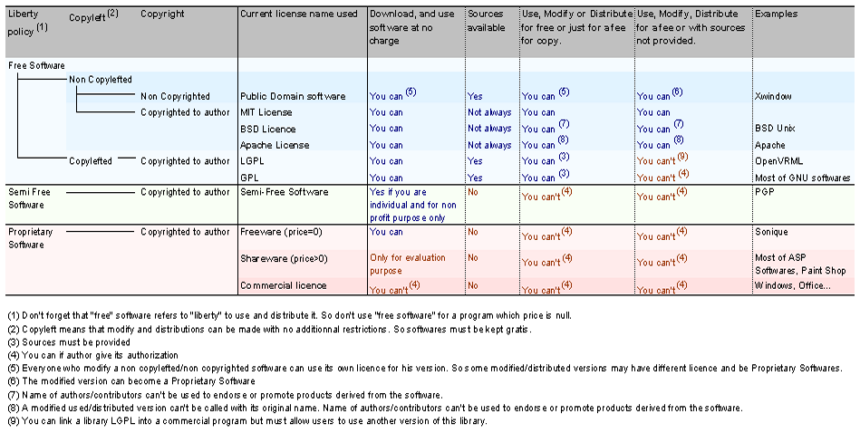

AWBot 1.1 Documentation
AWBot License / Copyright
AWBot is distributed under the
GNU General Public License (GPL)
.
So you must follow the line "Free software - Copylefted - GPL" to know what are major license agreements with AWBot.
